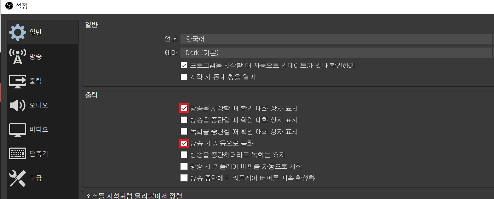
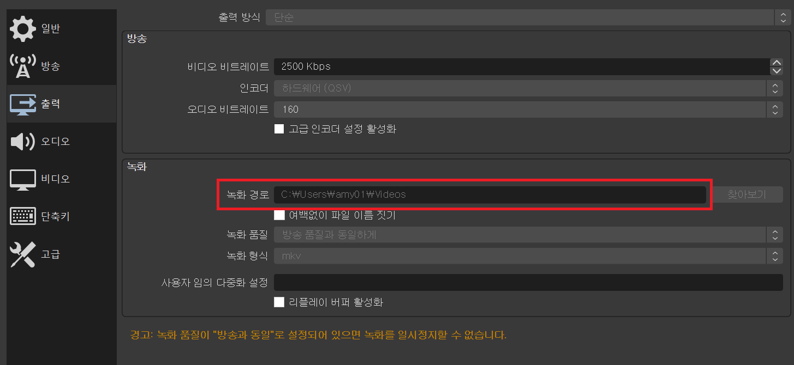

Online Event Guideline
Home
Zoom
Youtube
Google Meets
시작하기
before
8/10
after
OBS Studio 설정하기
화면 아래에 있는 설정을 눌러주세요.
자동저장 설정하기
일반탭에서 출력에 있는
방송을 시작할 때 확인 대화 상자 표시
와
방송 시 자동으로 녹화
를 체크해주세요.

출력탭에서 녹화에 있는 녹화경로를 설정해주세요. 영상이 자동저장 된 후 이곳에 저장됩니다.

Next